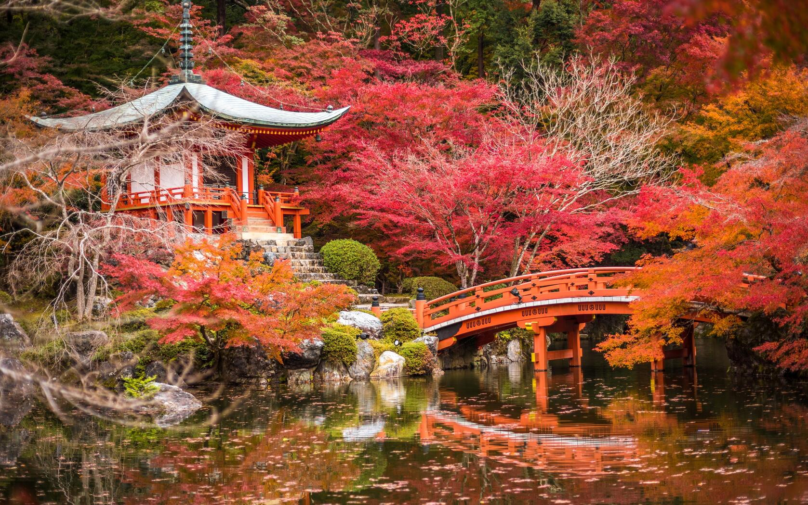

Храм Хаседэра (Hasedera)
Храм Хаседэра, расположенный в Камакуре, славится своими живописными видами и уникальной архитектурой.
Осень здесь превращает окружающий парк в палитру глубоких и ярких цветов. В это время года можно наблюдать изменение листвы, где клены поражают своим великолепием.
Храм Киёмидзу-дэра (Kyomizudera)
Киёмидзу-дэра, известный во всем мире своими деревянными павильонами и террасами, предлагает непередаваемое зрелище осенью. С высоты открывается потрясающий вид на горы, покрытые осенними оттенками, а сама атмосфера храма пронизана спокойствием и гармонией.
Храм Тэофоку-дзи (Tofokuji)
Храм Тэофоку-дзи известен своими удивительными японскими садами, которые осенью становятся настоящим произведением искусства. Золотые и алые оттенки листвы, отражающиеся на водной поверхности прудов, создают незабываемые моменты для каждого посетителя.
Храм Гинкаку-дзи (Ginkakuji)
Храм Гинкаку-дзи, или Серебряный павильон, поражает своей спокойной красотой. Осенний сезон здесь наполнен тишиной и медитацией, когда листья меняют свой цвет, а само место наполняется атмосферой умиротворения.
